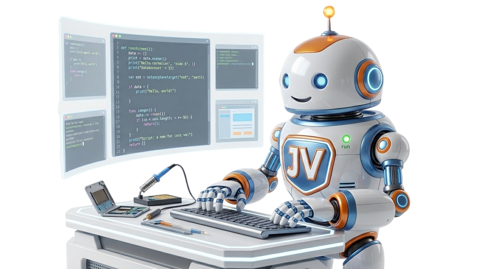
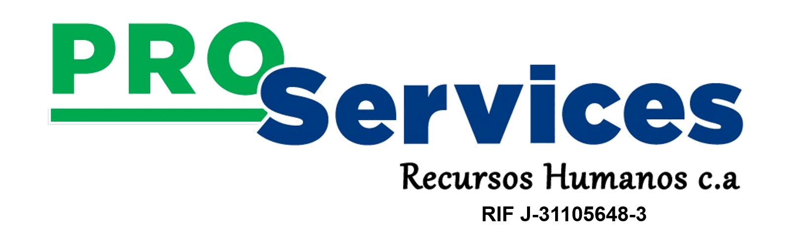
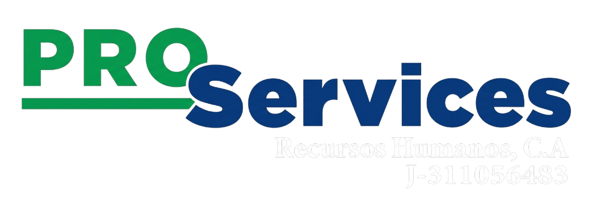

Ingeniería de Software con Visión de Crecimiento
En JVDevs diseñamos y desarrollamos software a la medida enfocado en optimizar operaciones y potenciar la presencia digital de los negocios. Combinamos arquitectura moderna, código limpio y diseño centrado en el usuario para entregar soluciones digitales escalables y de alto rendimiento.

¿Por Qué Trabajar con Nosotros?
Sin plantillas rígidas: cada solución se adapta a los procesos reales de tu negocio.
Rápido, limpio y construido con buenas prácticas de seguridad.
Soporte técnico post-entrega para que tu plataforma nunca te deje solo.


Impulsando la transformación digital de nuestros aliados estratégicos.
Proyectos que Hablan por Nosotros
Sitio Web Corporativo — PROServices Recursos Humanos, C.A.
Desarrollamos un sitio web estático para PROServices, una organización con más de 20 años de trayectoria en gestión de talento humano en Maracay. La plataforma presenta sus servicios (reclutamiento y selección, outsourcing, empleo temporal, entre otros), múltiples canales de contacto y ubicación, dándoles una presencia profesional en internet.
Visitar sitio en vivo ↗Lo Que Dicen de Nosotros
Antes de trabajar con JVDevs no teníamos presencia en internet. Hoy contamos con una página web profesional que refleja quiénes somos y qué ofrecemos. El proceso fue rápido, cercano, y el resultado superó lo que esperábamos.
Nuestro Proceso de Trabajo
Análisis
Diagnóstico de necesidades y alcance del proyecto.
Diseño y Arquitectura
Estructura de la interfaz y base de datos.
Desarrollo
Código limpio, pruebas e integración tecnológica.
Despliegue y Soporte
Puesta en producción y acompañamiento continuo.
Con Qué Trabajamos
Preguntas Frecuentes
¿Cuánto tiempo toma el desarrollo de una plataforma o sitio web?
El tiempo varía según la complejidad del proyecto. Un sitio web corporativo puede estar listo en 1-2 semanas, mientras que un sistema de gestión a medida puede tomar de 3 a 8 semanas. Al iniciar, te damos un cronograma claro basado en el alcance definido en la etapa de análisis.
¿El software incluye mantenimiento o soporte post-entrega?
Sí. Todos nuestros paquetes incluyen mantenimiento técnico, corrección de errores y respaldo periódico de información. También ofrecemos planes de soporte continuo para actualizaciones y nuevas funciones a futuro.
¿Cómo se maneja el código fuente y el dominio del proyecto?
El código fuente y el dominio quedan a nombre de tu empresa — tú eres el dueño del proyecto. Nosotros nos encargamos de la configuración inicial y te acompañamos en la gestión de renovaciones mientras lo necesites.